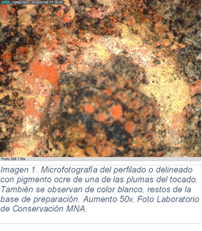
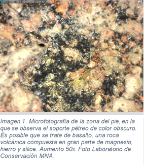
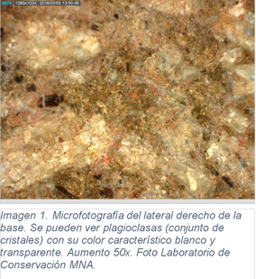
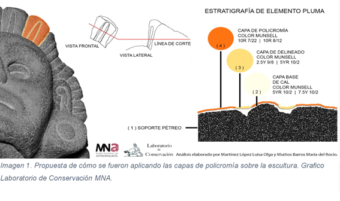
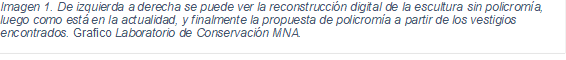
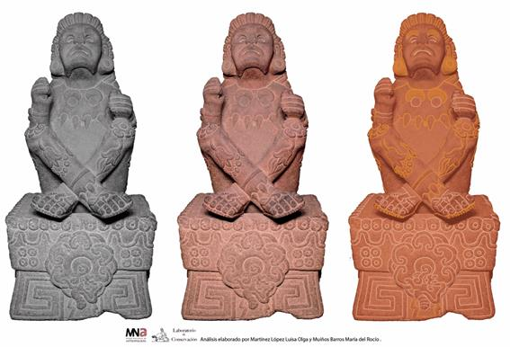

Conservación
La escultura de Xochipilli posee muchos rasgos y atributos que en seguida atrapan la mirada. A un tiempo, tiene otros que después de unos cuantos minutos de observación pausada, comienzan a saltar a la vista generando asombro, curiosidad y cada vez más preguntas.
Uno de estos rasgos cautivantes y también característicos de esta escultura es la tonalidad roja que la baña casi por entero como un resplandor. A más tiempo se le contempla, la piedra va revelando poco a poco su color, y en algunos resquicios y pliegues, se manifiesta con toda claridad.
Como parte del afán de desmenuzar lo más posible todas las cualidades y características de esta obra maestra de tradición escultórica chalca, el Laboratorio de Conservación del Museo Nacional de Antropología, encargado del estudio, la conservación y la restauración de su vasta colección, llevó a cabo un análisis exhaustivo de la policromía de la escultura de Xochipilli. Su objetivo fue buscar minuciosamente los pigmentos albergados en la superficie y poros de la piedra de la escultura, así como su tipo, su fecha probable y método de aplicación y su estado de conservación. Sus resultados son muy reveladores e interesantes, ya que aportan al entendimiento de esta emblemática pieza y nos permiten imaginarnos cómo pudo haber lucido en su momento de creación y de mayor esplendor.
A través de esta plataforma ponemos a disposición este estudio técnico llevado a cabo por el Laboratorio de Conservación del MNA para quienes deseen ahondar en el conocimiento de este aspecto de Xochipilli, atributo también de la riqueza en la representación de la escultura mexica.
La policromía de la escultura mexica del dios Xochipilli
Luisa Olga Martínez López[1]
y María del Rocío Muiños Barros[2]
Introducción
El Laboratorio de Conservación del Museo Nacional de Antropología (MNA) de la Ciudad de México es el encargado de conservar[3] y restaurar[4] sus colecciones arqueológicas, etnográficas e históricas, y en coordinación con el INBA, también la obra artística que resguarda dicho recinto. Este acervo se caracteriza por la gran variedad de materiales que lo conforman, como piedra, pintura, plumas, metales, madera y cerámica, entre otros.
En el campo de la conservación es indispensable el estudio previo de las piezas con el fin de recabar toda la información necesaria –que abarca desde los aspectos propios de la historia de cada objeto hasta su tecnología, el material con el que están elaborados, etc.–, para después desarrollar estrategias y metodologías de conservación o de restauración adecuadas a cada obra, las cuales se basan en la ciencia de los materiales.
Para lograr este cometido, el laboratorio realiza una serie de estudios científicos mediante diversas herramientas y métodos de análisis, incluidos algunos de primera aproximación al objeto.
Caso de estudio: Escultura mexica de Xochipilli, análisis de la policromía
Como parte de los trabajos multidisciplinarios que se realizan en el MNA, en coordinación con la curaduría de la Sala Mexica se estudió la policromía de la escultura de Xochipilli, con la finalidad de complementar la investigación realizada por otras disciplinas.[5]
Objetivos
El propósito de dicho estudio fue conocer el estado de conservación de la decoración para lograr una propuesta de la distribución y la estratigrafía[6] de la policromía[7].
Metodología aplicada al caso de estudio y resultados
Investigación documental
La consulta de fuentes es básica para manejar adecuadamente los objetos arqueológicos que pudieran ser expuestos en el museo, ya que por lo general han sufrido diversas modificaciones, desde su manufactura y su extracción de la matriz arqueológica, hasta su manipulación, restauración y exhibición. Estas modificaciones pudieron ser fruto de operaciones que buscaban preservar y facilitar la comprensión del objeto exhibido. Para los conservadores es relevante acudir a las fuentes escritas y gráficas[8] (como fotografías, esquemas y dibujos), ya que pueden aportar valiosa información sobre dichas modificaciones.
Gracias a estudios similares[9] al que ocupa esta investigación,[10] sabemos que en las esculturas y en los relieves mexicas los materiales más utilizados fueron las rocas de tipo volcánico: andesita y basalto; además, esos estudios comprueban que era común que tales obras estuvieran policromadas.
En cuanto a los colores que conformaban la paleta mexica, ahora sabemos que los artistas antiguos utilizaron los mismos pigmentos tanto en la escultura como en la pintura mural,[11] predominando los de naturaleza mineral. La paleta cromática se componía principalmente de blanco, ocre, rojo, negro y azul. Estos pigmentos se caracterizan por su naturaleza inorgánica (tierras, óxidos, etc.), híbrida (como el añil), y orgánica (carbón vegetal, entre otros).
La base de preparación, o estuco, estaba compuesta de carbonato de calcio, mientras que los aglutinantes[12], según las fuentes documentales, procedían de gomas vegetales, proteínas animales, aceites, ceras o resinas y azúcares,[13] posiblemente de un mucílago[14] de orquídea. En la tabla 1 se observan los distintos pigmentos reportados para el monolito de Tlaltecuhtli, en el que fue posible determinar la composición química y cristalográfica que más adelante retomaremos como referencia para proponer una aproximación comparativa para los restos encontrados en el de Xochipilli.
Tabla 1. Composición mineralógica de los colores de la Tlaltecuhtli[15]
|
Color |
Pigmento identificado |
Composición química |
|
Blanco |
Calcita[16]/estuco |
Carbonato de calcio (CaCO3) |
|
Azul |
Azul maya |
Paligorskita + añil (Mg, Al)2Si4O10(OH)-4H2O + añil
|
|
Ocre |
Oxihidróxido de hierro + Óxido férrico FeO(OH) + Fe2O3 |
|
|
Rojo |
Hematita |
Óxido férrico (Fe2O3) |
|
Rojo oscuro (borgoña) |
Hematita y ligeras trazas |
Óxido férrico + Óxido ferroso-diférrico + Óxido de silicio Fe2O3 + Fe3O4 + SiO2 |
|
Negro |
Hollín o humo |
Carbón |
Registro gráfico y documental
Antes de cualquier estudio es primordial contar con fotografías que remitan al registro fidedigno del momento previo al análisis, además de que sirven para ubicar las áreas seleccionadas para tomar las microfotografías. También es importante capturar en una base de datos los resultados obtenidos y anotar la información que va surgiendo conforme avanza el estudio.
Exploración organoléptica[21]
Esta tarea consiste en las primeras averiguaciones que se hacen en todo análisis científico, realizado a través de los sentidos, junto con la experiencia de los profesionales. Como resultado, pudimos detectar a simple vista que la pieza había sido intervenida a la altura de la muñeca del lado derecho. Era evidente que el pigmento rojo predominaba en el objeto y que conservaba restos de blanco, pero no existía un registro metodológico de su distribución.
Exploración de fluorescencia inducida por luz ultravioleta (UV) de onda corta

La luz UV nos ayudó a percibir mejor las intervenciones anteriores (imagen 1), como fijado de policromía, resanes, reintegración cromática y adhesión de materiales de origen plástico ajenos a la escultura, en algunos casos con un patrón lineal que sugiere que se trata de los residuos de un material que posiblemente haya sido utilizado para sujetar la escultura al momento de su manipulación.
Análisis con microscopía óptica digital
 Se tomaron un total de 981 microfotografías[22]
con un microscopio óptico[23] digital portátil para visualizar e
identificar los restos de policromía y la manera en que fue aplicada. Con este
estudio pudimos aproximarnos a cómo está conformada la estratigrafía de la
escultura, que consiste en:
Se tomaron un total de 981 microfotografías[22]
con un microscopio óptico[23] digital portátil para visualizar e
identificar los restos de policromía y la manera en que fue aplicada. Con este
estudio pudimos aproximarnos a cómo está conformada la estratigrafía de la
escultura, que consiste en:
El pigmento rojo (posible hematita[24]) es la capa predominante[25] en la escultura y en su base; está conformado por partículas muy finas y el grosor parece homogéneo (imagen 2).
El pigmento ocre (posible goetita[26]) se usó para delinear los contornos de algunos elementos de la indumentaria y de la decoración corporal; se encontraron restos de este color especialmente en las plumas del tocado ( imagen 3), en las orejeras y en las flores del cuerpo (imagen 7).
La base de preparación de color blanco (posible calcita[27]) se encuentra en las partes más profundas de la talla: alrededor de los ojos, dentro de la boca, en las formas circulares del pectoral, entre los dedos de las manos, alrededor de la muñeca, en los dedos de los pies, en la parte superior del calzado y en toda la base. Es un estrato muy fino y compacto (imagen 3 y 7). Aunque su distribución actual denota líneas que siguen el contorno de la talla, no es posible afirmar que esa fuera su función original; aparentemente se trata de vestigios mínimos que la obra logró conservar a lo largo de los años.
En cuanto al soporte de piedra (posiblemente andesita o basalto[28]), las características morfológicas de la piedra, comparadas con las fuentes documentales tanto geológicas como históricas, nos hacen pensar en la posibilidad de que el material utilizado en esta escultura corresponda al que se ha descrito en otras investigaciones. Sin embargo, al realizar el análisis microscópico nos dimos cuenta de que la coloración, la textura y el acomodo de las inclusiones era muy diferente en la escultura y en la base. La escultura presenta una coloración oscura con textura compacta (imagen 4), mientras que la base es más clara y de textura rugosa (imagen 5). Lo anterior sugiere que pudiera no tratarse del mismo núcleo pétreo.
Adicionalmente, se identificaron intervenciones anteriores de restauración y deterioros, como manchas de pintura moderna, resinas y adhesivos.
Análisis mediante programa de edición de imagen
Se comprobó que usando como herramienta el programa Adobe Photoshop CS6© pueden modificarse los valores de tono, saturación e iluminación en las imágenes fotográficas con luz visible. Esto ayudó a guiar la exploración con el microscopio digital y localizar áreas específicas de pigmentos. Con esta manipulación de la imagen se lograron aislar y destacar áreas de color que no eran evidentes a simple vista, y constatar que efectivamente estuvieran dispuestas de esa manera sobre la escultura.
Con la opción de inversión de imagen, en este programa de computación se obtuvo otra forma de manipulación digital para generar un negativo y un positivo virtual de los colores y las sombras. Asimismo, pudieron destacarse las líneas en que originalmente se trazaron las guías para tallar las formas. También en este caso la manipulación virtual resultó ser una excelente herramienta.
Aproximación al color a través del sistema Munsell ©
aplicado en el programa The Colour Watcher Tool ©4.4

Estas herramientas ayudaron a la categorización de los colores presentes
en cada microfotografía y a obtener una estadística de los tonos predominantes,
para así establecer una aproximación a la paleta de colores utilizados. Los
resultados fueron: Rojos[29] 10R 7/22 y 10R 7/18, y Amarillos
2.5Y 9/8 y 7.5Y 10/2 para la capa pictórica, y para la base de preparación:
Neutro/blanco 10YR 8/2 (imagen 6).
Dictamen del estado de conservación
El estado de conservación de la policromía es regular debido a que hay pérdidas considerables, pero es estable gracias a los tratamientos de fijado. Por otra parte, esta obra es un claro ejemplo del deterioro que puede generar el constante contacto directo con la superficie de la pieza. Tocar los objetos en exhibición provoca, tanto en la policromía como en el soporte pétreo, abrasión, pulimento y depósito de grasa en la superficie, que a corto y largo plazo derivan en deterioros considerables.
Conclusiones
Este trabajo es una aproximación a la presencia de los materiales que decoran la escultura mexica de Xochipilli. Para su realización fue fundamental el uso de diferentes métodos analíticos y la investigación documental, lo que demuestra la importancia de los estudios multidisciplinares aplicados al patrimonio. Los análisis aportaron información de gran valor histórico-artístico y permitieron elaborar una propuesta acerca de los materiales empleados en la policromía.
La paleta de tonos coincide con los reportados para la cultura mexica, al igual que con la técnica de manufactura sugerida en otros estudios similares. La metodología aplicada nos ayudó a comprender la técnica de manufactura usada para su decoración y a desarrollar la siguiente propuesta: encontramos que la base de preparación estaba presente en las partes más profundas de la talla[30] y en los poros de la piedra de toda la escultura y de la base. Por ello, podemos sugerir que en algún momento ésta se aplicó de manera homogénea, y que posteriormente la obra perdió gran parte de ella.
Después de colocar la base de preparación, se aplicó el pigmento color ocre en ciertas zonas, en este caso para delinear algunos motivos, como las flores; después se aplicó el color rojo en las partes restantes.
Por otro lado, los estudios hechos a otras obras mexicas sugieren que también existió la aplicación directa de pigmento sin base de preparación. Con los estudios realizados en Xochipilli, como ya mencionamos, se observa que predomina el color rojo, pero no es concluyente asegurar que debajo de él no conserve una base de preparación. Lo que puede inferirse es que en caso de que estudios posteriores determinaran la aplicación directa del rojo sobre la roca, la presencia de la base de preparación blanca serviría para afirmar que en algún momento de su primera historia la pieza fue retocada, probablemente para mantenimiento (imagen 7).
Por último, esta investigación no es determinante para caracterizar la composición de los pigmentos, pero sí pudo definirse con mayor exactitud su distribución y se obtuvieron datos que dan soporte a la propuesta de la manera en que fueron aplicados.
Siendo apenas una primera aproximación a la técnica de manufactura, vale agregar que se requieren otro tipo de análisis instrumentales que complementen y corroboren con datos científicos lo que aquí se plantea.

Fuentes documentales
Barajas Rocha, María. 2012. “El relieve monumental de la diosa Tlaltecuhtli del Templo Mayor: estudio para la estabilización de su policromía”. Intervención 5: 23-33.
Best, Myron G. 2003. Igneus and metamorphic petrology. Second. Oxford, United Kingdom: Blackwell Science Ltd.
Glockner, Julio. 1997. “El Señor de las Flores”. Elementos 4. Puebla, pp. 69-72.
Gordon Wasson, Robert. 1982. “Xochipilli, Príncipe de las Flores”. Revista de la Universidad de México 11. México: Universidad Nacional Autónoma de México, pp. 10-18.
Historia, Instituto Nacional de Antropología e. s/f. “Mediateca INAH”. Consultado el 25 de enero de 2018. http://mediateca.inah.gob.mx/islandora_74/islandora/object/fotografia%3A2 6761.
Koczynski, Noemí. 2014. “Policromía de las esculturas de serpientes de la Sala Mexica”. México.
López Luján, Leonardo, y Marie France Fauvert Berthelot. 2012. “El arte escultórico de los mexicas y sus vecinos”, en Escultura monumental mexica, pp. 71-113. México: FCE, Fundación Conmemoraciones 2010.
López Luján, Leonardo et al. 2017. Nuestra sangre, nuestro color. La escultura polícroma de Tenochtitlan. México: Instituto Nacional de Antropología e Historia.
Madrona Ortega, Javier. 2015. Vademécum del Conservador. Terminología aplicada a la conservación del patrimonio cultural. Madrid: Tecnos.
Magaloni Kerpel, Diana. 1998. “El arte en el hacer. Técnicas de pintura mural”, en Fragmentos del pasado. Murales prehispánicos, pp. 89-110. México: Artes de México.
Morante López, Rubén B. 1998. “El pintor prehispánico”, en Fragmentos del pasado. Murales prehispánicos, pp. 39-45. México: Artes de México.
Olmedo Vera, Bertina. s/f. “Colecciones/Arqueología/Xochipilli”. Consultado el 5 de febrero de 2018. http://www.mna.inah.gob.mx/index.php?option=com_sppagebuilder&view=page&id=4975.
Yusá Marco, Dolores Julia. 2015. “Fundamentos básicos de microscopía óptica y microscopía electrónica”, en Dolores Julia Yusá Marco (ed.), Estudio químico analítico de obras de arte. Un enfoque práctico, pp. 21-22. Valencia: Universitat Politècnica de València.
[1] Luisa Olga Martínez López es restauradora egresada de la Escuela de Restauración de Occidente; ha participado en proyectos de conservación y restauración en el MNA de 2017 a la fecha.
[2] María del Rocío Muiños Barros recibió el título de Licenciada en Historia del Arte por la Universidad de Santiago de Compostela, en las orientaciones de Arte Antiguo y Medieval, Arte Contemporáneo y Patrimonio Artístico, y el título superior equivalente a grado en Restauración y Conservación, en la especialidad de Arqueología, en la Escuela de Conservación y Restauración de Bienes Culturales de Galicia. Restauradora en varios proyectos desde 2014 hasta 2018.
[3] Madrona Ortega, 2015. International Council Of Museum (ICOM-CC). La conservación son todas aquellas medidas o acciones que tengan como objetivo la salvaguarda del patrimonio cultural tangible, asegurando su accesibilidad a generaciones presentes y futuras.
[4] Madrona Ortega, 2015. ICOM-CC. La restauración son todas aquellas acciones aplicadas de manera directa a un bien que tenga como objetivo facilitar su apreciación, su comprensión y su uso.
[5] Olmedo Vera, s/f.
[6] Para los restauradores, la estratigrafía es una herramienta que permite estudiar y aproximarse a la técnica de manufactura y materiales de un objeto, a través de las capas que lo conforman, por ejemplo, en una escultura, la piedra (el soporte) sería la primera, la base de preparación (la interfaz que recibe el color) la segunda y el pigmento rojo (la decoración) la tercera.
[7] Capa pictórica conformada por más de dos tonos de color. Los materiales pueden ser variados o no.
[8] Historia, s/f.
[9] Koczynski, 2014.
[10] López Luján et al. 2017; López Luján y Fauvert Berthelot, 2012; Barajas Rocha, 2012.
[11] Magaloni Kerpel, 1998; Morante López, 1998.
[12] Sustancia que permite que las partículas de los pigmentos se adhieran al soporte donde se quieren aplicar. Por ejemplo, el aglutinante en el Óleo es un aceite.
[13] Barajas Rocha, 2012.
[14] Es una sustancia obtenida de algunas plantas, se emplea como adhesivo o aglutinante. En términos científicos es un polisacárido (biomolécula conformada por monosacáridos).
[15] Barajas Rocha, 2012. Resultado de los análisis de la composición mineralógica de los colores de naturaleza inorgánica de relieve monumental de la diosa Tlaltecuhtli, hecho por Giacomo Chiari del Getty Conservation Institute (GCI) mediante difracción de rayos X (XRD).
[16] Forma cristalina del carbonato de calcio. Se utiliza como pigmento o base de preparación.
[17] Es un mineral compuesto por la oxidación de sales hierro que se usa como pigmento, los tonos varían del ocre a negro.
[18] Es en mineral compuesto de óxido de hierro, Se emplea como pigmento rojo.
[19] Es un mineral compuesto de óxido ferroso, se emplea como pigmento color negro.
[20] Es otra forma estructural que pueden presentar los cristales de sílice.
[21] Es el estudio que se hace a partir del uso de los sentidos, como la vista o el tacto.
[22] Toma fotográfica que se realiza bajo la óptica de un microscopio.
[23] Yusá Marco, 2015.
[24] López Luján y Fauvert Berthelot, 2012.
[25] Glockner (1997) y Gordon Wasson (1982) mencionan que Xochipilli generalmente era decorado con pigmento rojo.
[26] López Luján y Fauvert Berthelot, 2012.
[27] López Luján y Fauvert Berthelot, 2012; López Luján et al., 2017; Barajas Rocha, 2012.
[28] López Luján y Fauvert Berthelot, 2012; Best, 2003.
[29] Los valores de hue, value y croma son más amplios que los de la carta Munsell©.
[30] Cabe destacar que sería inusual que la base de preparación se utilizara únicamente para delinear las formas. Es importante no confundir esta capa con la aplicación de color blanco para decorar formas.